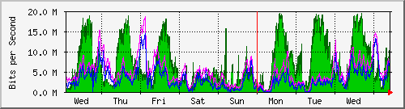

| Description : Serial4/0/0 | 20Mbps connected |
| 마지막 수정 2001년 3월 15일 10시 00분 |
일일 Graph (5 Minute Average)
| 최대 In: | 19.6 Mb/s (98.1%) | 평균 In: | 7224.6 kb/s (36.1%) | 현재 In: | 7428.9 kb/s (37.1%) | ||
| 최대 Out: | 14.8 Mb/s (73.9%) | 평균 Out: | 5281.0 kb/s (26.4%) | 현재 Out: | 5736.6 kb/s (28.7%) |
일주일 Graph (30 Minute Average)

| 최대 In: | 19.7 Mb/s (98.7%) | 평균 In: | 6002.1 kb/s (30.0%) | 현재 In: | 9381.2 kb/s (46.9%) | ||
| 최대 Out: | 18.6 Mb/s (93.0%) | 평균 Out: | 3459.4 kb/s (17.3%) | 현재 Out: | 6483.3 kb/s (32.4%) |
한달 Graph (2 Hour Average)
| 최대 In: | 19.7 Mb/s (98.7%) | 평균 In: | 4753.9 kb/s (23.8%) | 현재 In: | 1620.6 kb/s (8.1%) | ||
| 최대 Out: | 18.6 Mb/s (93.0%) | 평균 Out: | 3944.2 kb/s (19.7%) | 현재 Out: | 2734.5 kb/s (13.7%) |
년간 Graph (1 Day Average)
| 최대 In: | 19.7 Mb/s (98.7%) | 평균 In: | 4403.9 kb/s (22.0%) | 현재 In: | 8253.2 kb/s (41.3%) | ||
| 최대 Out: | 18.6 Mb/s (93.0%) | 평균 Out: | 3717.4 kb/s (18.6%) | 현재 Out: | 2976.2 kb/s (14.9%) |
| GREEN ### | 유입유통량(단위 : Bits / Second) |
| BLUE ### | 유출유통량(단위 : Bits / Second) |
| DARK GREEN### | 5분 단위 유입량중 최대치 |
| MAGENTA### | 5분 단위 유출량중 최대치 |
| version 2.9.10 | Tobias Oetiker <oetiker@ee.ethz.ch> and Dave Rand <dlr@bungi.com> |